The mathematical problem that gPROMS is solving over time can be written in the form:
where
x is a set of nx differential variables;
 is a set of
nxtime
derivatives of the differential variables
x (i.e., 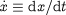 );
is a set of
nxtime
derivatives of the differential variables
x (i.e., 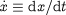 );
y is a set of ny algebraic variables;
u is a set of nu input variables;
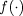 is a set of nx + ny ordinary differential (with respect to time) or algebraic equations.
It is worth noting that some of the variables x, y, u and the equations f may have arisen from the discretisation of variable and equation distributions over one or more DISTRUBUTION_DOMAINs. This is performed by gPROMS automatically before the start of the simulation.
At the start of the simulation, the input variables u are those which are Assigned in the Process entity. Of the rest of the variables, the ones that occur prefixed with a $ sign at least once in the model are considered to be differential variables x, while all others are algebraic variables y. However, the classification of a certain variable may change during the simulation. For instance:
Using a Replace task in a Schedule, we may drop a specification imposed on one variable z1 replacing it by a specification on a different variable z2. In such a case, z2 will become an input variable, while z1 will become (most probably) an algebraic variable.
A discontinuity resulting in a change in the active clause in a conditional (i.e. If/Then/Else or Case) equation in a Model entity may alter the status of one or more variables from differential to algebraic or vice versa.
In any case, the Sendmathinfo task always reports on the state of the model at the time of its execution.
One important characteristic of the mathematical model
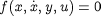
is that it is usually very sparse. This means that each of the equations 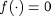 involves only a small subset of the variables x, , y, u. Since a model may involve tens of thousands of equations and variables, this fact may be of particular significance to a Foreign Process that seeks to carry out some mathematical manipulation of the gPROMS model.
The sparsity of a system of equations is related to the
structure of its Jacobian matrix  . This is the matrix of the partial derivatives of
the equations with respect to the variables, i.e.:
. This is the matrix of the partial derivatives of
the equations with respect to the variables, i.e.:
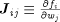
where w is the vector of all variables in the system, i.e.:
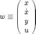
Of course, 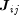 will be zero if variable
wj does
not actually occur in equation 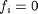 . In practice, the number of
non zero elements of  , nz, will normally be a
very small proportion of the 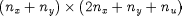 elements of this matrix. The total number of
nonzero elements, as well as the row and column in which each such
element occurs, define the sparsity pattern of
the model. This pattern may change during the simulation as a result
of changes in the structure of individual equations (e.g. due to
implicit model discontinuities described by If and/or Case constructs
in Models. Once again, Sendmathinfo will always report the state of
the model at the time of its execution.
, nz, will normally be a
very small proportion of the 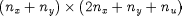 elements of this matrix. The total number of
nonzero elements, as well as the row and column in which each such
element occurs, define the sparsity pattern of
the model. This pattern may change during the simulation as a result
of changes in the structure of individual equations (e.g. due to
implicit model discontinuities described by If and/or Case constructs
in Models. Once again, Sendmathinfo will always report the state of
the model at the time of its execution.
In addition to the SigName (see also: General syntax), the execution of a Sendmathinfo task transmits to the Foreign Process the information summarised below:
| The total number of variables in the model | 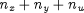 |
| The total number of equations in the model | 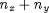 |
| The number of differential variables in the model | nx |
| The number of nonzero elements in the equation Jacobian | nz |
| Its current value |
| The current value of its time derivative (x variables only) |
| Its current classification as "input'', "differential'' or "algebraic'' |
| Its name (in terms of its full gPROMS pathname) |
| The row number of each non-zero Jacobian element |
| The column number of each non-zero Jacobian element |
| The current numerical value of each non-zero Jacobian element |